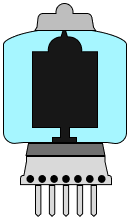
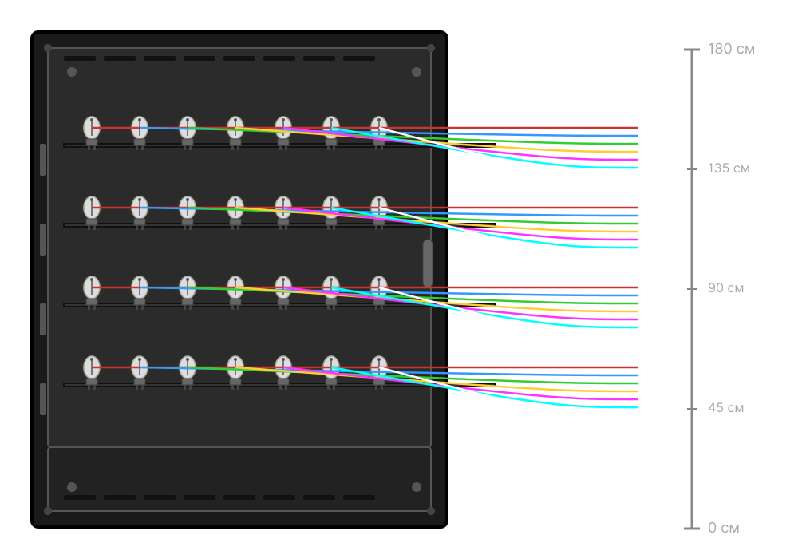
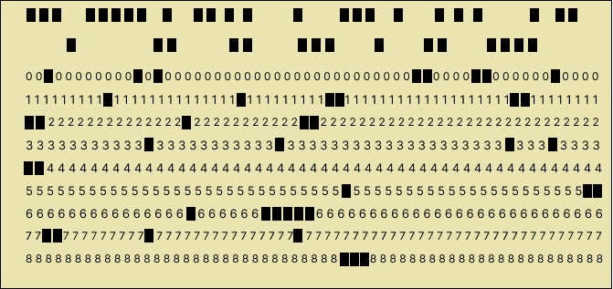

Вакуумна лампа
Вакуумні лампи були основними компонентами перших ЕОМ. Вони виконували функції підсилювачів та логічних елементів, але сильно грілися і займали багато місця.
ЕОМ першого покоління
ЕОМ займали величезні приміщення, складалися з тисяч вакуумних ламп та мали обмежену швидкість обчислень. Програмування здійснювалося вручну за допомогою перфокарт.
Перфокарта
Перфокарти використовувалися для введення даних і програм у ЕОМ. Інформація кодувалася шляхом пробивання отворів у картці.